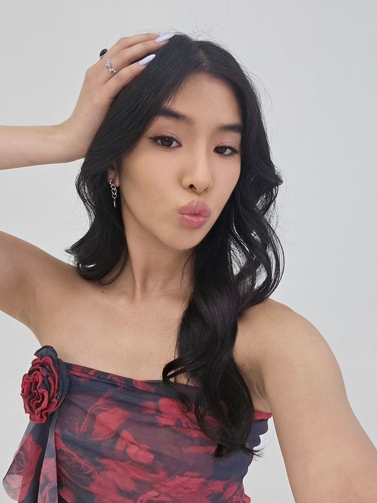
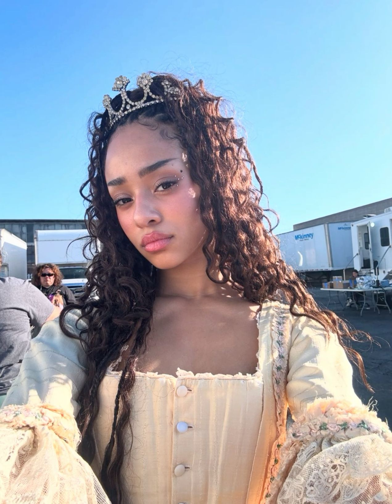
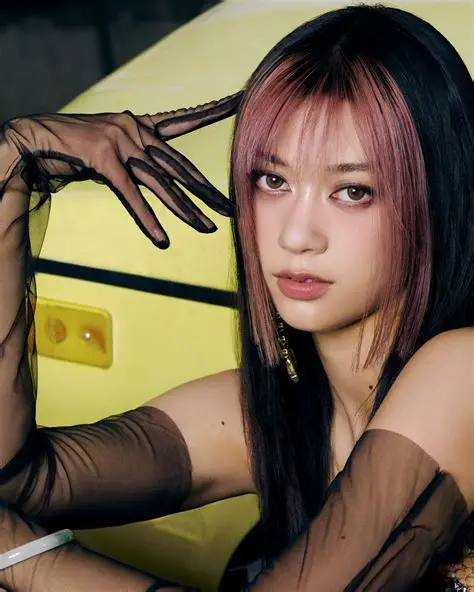

Sophia
Sophia es la líder de KATSEYE y nació en Filipinas. Se destaca por su increíble talento para cantar, su gran carisma y la seguridad que transmite en cada presentación. Durante el programa Dream Academy demostró ser una artista muy dedicada y logró ganarse el cariño de miles de fans. Gracias a su esfuerzo y personalidad, hoy es una pieza fundamental del grupo.

Daniela
Daniela tiene raíces venezolanas y cubanas. Es una de las bailarinas principales de KATSEYE y también posee una excelente voz. Siempre destaca por su energía, su alegría y la pasión que demuestra al bailar y cantar. Su talento y su cercanía con los fans la convierten en una de las integrantes más queridas del grupo.

Manon
Manon nació en Suiza y tiene raíces suizas, italianas y ghanesas. Es reconocida por su elegancia, su estilo único y la confianza que transmite sobre el escenario. Además de cantar y bailar muy bien, siempre sorprende con su presencia y personalidad, siendo una integrante muy importante de KATSEYE.

Lara
Lara tiene origen indio y es una de las vocalistas principales de KATSEYE. Su voz potente y su talento musical hacen que destaque en muchas de las canciones del grupo. También es conocida por su creatividad, dedicación y la pasión que demuestra en cada una de sus presentaciones.

Megan
Megan tiene ascendencia china y nacionalidad estadounidense. Es una artista muy completa, ya que canta y baila con gran habilidad. Siempre transmite una energía positiva y demuestra cuánto trabaja para mejorar cada día. Su simpatía y talento la hacen destacar dentro del grupo.

Yoonchae
Yoonchae nació en Corea del Sur y es la integrante más joven de KATSEYE. A pesar de su edad, ha demostrado un gran talento para el baile y el canto. Su dulzura, esfuerzo y carisma hacen que conquiste a los fans en cada presentación, convirtiéndose en una parte muy especial del grupo.